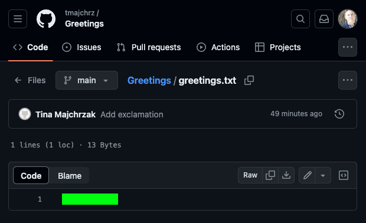

Flag GITHub (15 pts)
Go back to GitHub, and click on Greetings, then click on greetings.txt. The flag is under the green box.

You can complete Capture the Flag (CTF) activities below and check that you have the correct flags at the CTF link above. If you'd like to register your progress and to have your name appear on the leaderboard, you may opt to include your name when entering flags.
Many of your peers already use a version control system called Git, and employers list it among the most sought-after skills for entry-level developers. GitHub is an online tool to store and track Git repos (projects) that shows when you started using GitHub and how often you've made updates to your repos.
Employers will want to see that you started using it some time ago and use it actively. That's preferable to seeing you started using it a week before you applied for their position or that you've never used it, so I recommend you start now! There is a learning curve, but it's worth the investment, and I'm happy to help you.
Git allows us to retain snapshots of our work, so we can easily go back to a prior version, which can be helpful if we’re trying to determine where an error crept in. It also allows us to experiment with code changes, while retaining a good working version of our project, so if something goes wrong, we can step back to that prior version.
Another benefit of using Git is being able to coordinate with other programmers on a large project, where each person is adding different features at the same time. Git also lets us post our work on GitHub easily, which provides a place where we can showcase our work.
To learn how to use Git and GitHub watch Traversy Media's Git and GitHub Crash Course 2025. (50 minutes)
To practice these new skills and confirm your understanding, download and install Git on your machine. Like Brad, if you're using Windows, I recommend installing GitBash as well.
What is the latest version of Git? It is in the format x.y.z where x, y, and z are all numbers.
By default, Mac and Linux terminals use Unix commands. When you install Git for Windows on a PC, it comes with Git Bash, a shell which uses Unix commands. Follow these directions to get VS Code to use Git Bash on Windows.
It will be helpful to know some basic commands for interacting with the operating system. Review these resources, then solve the command line challenges below them. Although the first resource shows the Mac terminal, the commands discussed should work the same using Git Bash on a Windows PC.
Absolute BEGINNER Guide to the Mac OS Terminal
Which commands accomplish the location tasks described below?
Put the values under each of the green boxes above together, separated by pipes to build the flag. For example, if the commands are b and c, then enter b|c to get the flag. The pipe is above the return/enter key on standard keyboards.
Which commands accomplish the file tasks described below?
Put the values under each of the green boxes above together, separated by pipes to build the flag.
Which commands accomplish the directory tasks described below?
Put the values under each of the green boxes above together, separated by pipes to build the flag.
How can you refer to the directories below? For example, what would you use with the cd command to change to the parent directory of the directory you're currently in? Include NEITHER cd NOT slashes. These are discussed in the video above by Percy, beginning at location 4:20.
Put the values under each of the green boxes above together, separated by pipes to build the flag.
To explore terminal commands more, including grep, and piping with |, check out this great sandbox/tutorial by Robert Aboukhalil. To learn more about a specific command, you can start by looking it up in tldr.sh, an abbreviated version of the man (short for manual) pages. Man pages contain detailed documentation for commands and can be accessed by issuing the command man <command> (e.g., man ls).
Open the command line on your machine:
Issue the following two commands on the command line to add your name and e-mail address to Git. Be sure to fill in your name and e-mail where indicated.
git config --global user.name "Your Name"
git config --global user.email "Your Email"Issue the following command to set the default branch in Git to main.
git config --global init.defaultBranch mainUse ls to look at a listing of the files in the directory you’re currently in.
Create a directory for your work called gitProj by issuing this command.
mkdir gitProjGo into the gitProj directory by issuing this command.
cd gitProjThe gitProj directory currently is empty, although you may see . (current) and .. (parent) directories listed. If you don't see these using ls, you can see them by typing ls -a which means show me all files.
NOTE: If you type cd .. it will move you back to the previous directory, the one which contains the current directory you’re in.
From inside the gitProj directory issue this command to initialize a Git repository (repo) in this directory.
git initIt creates a directory called .git where revision history will be maintained. If you don't see it when you type ls, try typing ls -a.
After issuing the git init command, you should get a message like this one. The flag is under the green box.
Then issue this command.
git statusThe current status should indicate you’re on the main branch, there have been no commits yet, and there is nothing to commit.
Using an editor of your choosing (nano, vi, NotePad, TextEdit, VS Code, etc.), create greetings.txt, which contains only the word “Hello” and save it.
On the command line in the gitProj directory containing greetings.txt, issue this command again.
git statusThis time, in addition to telling you you're on the main branch where there are no commits yet, it should give you information about greetings.txt.
What does Git report about the status of greetings.txt? What kind of file is it?
Issue these commands.
git add greetings.txt
git statusThe first command adds greetings.txt to the staging area in preparation for a commit. The second command reports you’re still on the main branch where there are no commits yet, but now reports you have a new file greetings.txt which is ready to be committed (i.e., saved in your repo).
To commit to storing a new version of your work, issue this command.
git commit -m "Add Hello"The commit above commits all current files in the staging area and saves them as a remembered “snapshot” of files in your repository. You could think of it as a backup of your work which you can revisit any time. It attaches the phrase Add Hello to the commit, so you can keep track of versions of your code with references to what those versions accomplish. The command reports that 1 file changed.
Run git status again, and it will report you’re on the main branch, and there is nothing to commit. Now issue this command.
git logIn the Git log there is a really long identifier following what word? The word is under the green box is the flag. Note that your identifier likely will not match mine. It is a unique identifier assigned by Git for the commit we labeled Add Hello.
Open greetings.txt in your editor again, add the word World, and save it. Then issue this command.
git statusThe output will indicate greetings.txt has been modified.
What does Git report about the changes to greetings.txt? The words are under the green box and are the flag.
Issue these commands.
git add greetings.txt
git status
git logAs before, the first command above adds greetings.txt to the staging area. The last command displays the same information as the last time it was issued. The second command reports you’re on the main branch and that greetings.txt is ready to be committed.
To commit the current snapshot of your work to the repository and label it with the phrase Add World, issue this command.
git commit -m "Add World"It reports 1 file was changed. Now issue these commands.
git status
git logThe first command above reports you’re on the main branch, and there is nothing to commit. The second command now shows there are two commits for this repository.
Which commit, Add Hello or Add World, does Git report first in its log list? In other words, which one is at the top of the listing?
In addition to being associated with the phrases Add Hello and Add World, notice that each commit also is associated with a really long unique identifier.
Try checking out the first commit (i.e. the first snapshot) of your project with the phrase Add Hello attached to it by issuing the command below, where ### is the long identifier associated with that first commit.
git checkout ###########################The above will report you’re in a detached head state. If you check the contents of greetings.txt, you’ll see you’ve reverted back to an earlier point in time, to an earlier snapshot of your work in your repository history.
Open greetings.txt and report what you find. Its contents are the flag.
If you run git log now, how many commits are listed?
After issuing the command below and checking out main again, how many commits does git log report?
git checkout mainIf you'd like to work on a new strategy and/or to do a large refactoring of your code, you might opt to check out a branch rather than work directly in main. If you like the outcome of your efforts, you can merge your new work into main. Otherwise, you can abandon the branch and go back to main, which is a snapshot of your work prior to the current changes.
Check out a new branch by issuing this command.
git checkout -b exclaimThis will create a new branch called exclaim and check it out. Alternatively, you could use the two commands below to accomplish the tasks of creating a new branch and checking it out.
git branch exclaim
git checkout exclaimIf you do a git log, you'll see HEAD points to exclaim and main. Edit greetings.txt by adding an exclamation mark after Hello World, then add greetings.txt to the staging area and make a new commit with the phrase "Add exclamation".
To which branch does HEAD point now?
If we decide we're happy with the changes we've made to the exclaim branch, we can merge it into main by issuing these commands.
git checkout main
git merge exclaimAfter merging the exclaim branch with the two commands above, issue the git log command and answer these questions.
Build the flag from the answers to the questions above with pipes between each.
GitHub is popular place to backup and publish your work and to collaborate with others using Git repos and tools.
Create an account on GitHub, if you don't already have one. In your account create a new public repository called Greetings. Although generally recommended, you do not have to provide a description, README file, .gitignore file, or license. You can list files and directories in .gitignore that you don't want to include in the revision history for your repo. For example, if you have login credentials needed by your code stored in a file called login.txt that you don't want published on GitHub, you can add a line in .gitignore containing login.txt.
Issue these commands in the Git repo you created on your local machine in order to link it with the new Greetings repo you just created on GitHub. You'll need to replace YOUR_ACCT_NAME with your account name.
git remote add origin https://github.com/YOUR_ACCT_NAME/Greetings.git
git branch -M main
git push -u origin main
The first command adds a connection to the remote repo located at the URL provided and sets it to be called origin. The second command renames the current branch main. The third command pushes the contents of the local repo (on your machine) to the remote repo (origin). Using the -u flag sets origin as the default upstream repo, so you can just say push main in the future.
Go back to GitHub, and click on Greetings, then click on greetings.txt. The flag is under the green box.
Go back to your local repo, update greetings.txt, so it now contains Hi There! instead of Hello World! Add greetings.txt to the staging area, commit it with the phrase "Change greeting", and push it to GitHub using the command below.
git push mainRefresh this GitHub page. The flag is under the green box.

Learn more about Git and GitHub from the University of Helsinki lesson.